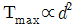
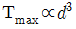
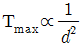
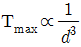
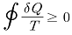
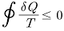
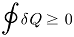
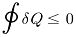
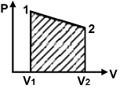
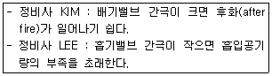

자동차정비기사 (2015-05-31 기출문제)
1과목: 일반기계공학
1. 지름 2.5㎝의 연강봉을 30℃일 때, 양단을 강성벽에 고정 후 0℃까지 냉각하였을 경우 연강봉에 생기는 압축응력은 약 몇 kPa인가? (단, 연강의 선팽창계수(α)는 0.000012, 세로탄성계수(E)는 210MPa이다.)
- 37.1
- 75.6
- 371
- 756
(정답률: 47%)

2. 다음 중 베어링 메탈로서 가장 많이 사용되는 것은?
- 침탄강
- 화이트 메탈
- Ni-Cr강
- 구상흑연 주철
(정답률: 70%)
3. 연삭숫돌에 눈메움이나 무딤 현상이 발생하면 연삭성이 저하된다. 이때 숫돌 표면에 무디어진 입자나 기공을 메우고 있는 칩을 제거하여 본래의 형태로 숫돌을 수정하는 작업은?
- 로딩
- 엠보싱
- 드레싱
- 글레이징
(정답률: 58%)
4. 용접부의 미소한 균열이나 작은 구멍 등을 신속하고 용이하게 검출하는 방법으로 철, 비철재료 및 비자성 재료에도 널리 이용되며, 형광물질을 기름에 녹인 것을 표면에 칠하는 검사방법은?
- 외관검사
- 와류탐상검사
- 자분탐상검사
- 침투탐상검사
(정답률: 70%)
5. 다음 중 암나사를 가공하는데 사용하는 공구는?
- 탭
- 리머
- 호브
- 다이스
(정답률: 66%)
6. 다음 중 베인펌프의 구성 요소가 아닌 것은?
- 캠링
- 피스톤
- 회전자
- 베인(날개)
(정답률: 65%)
7. 유압펌프 중 용적형 펌프가 아닌 것은?
- 기어펌프
- 베인펌프
- 터빈펌프
- 피스톤펌프
(정답률: 51%)
8. 소성가공에서 소재를 고온으로 가열하여 앤빌 위에 놓고 해머로 타격을 가하거나, 2개의 다이(die) 사이에 소재를 넣고 압력을 가하여 필요한 형상의 제품을 만드는 것은?
- 단조
- 압연
- 인발
- 주조
(정답률: 63%)
9. 원동차의 지름이 300㎜, 종동차의 지름이 450㎜, 폭 75㎜인 원통 마찰차가 있다. 원동차가 300rpm으로 회전할 때, 전달동력은 약 몇 kW인가? (단, 마찰차의 단위길이당 허용압력은 2kgf/㎜이고, 마찰계수는 0.2이다.)
- 1.4
- 4.7
- 6.9
- 7.1
(정답률: 17%)
10. 보통 주철에 관한 설명으로 옳지 않은 것은?
- 기계 가공성이 좋고 값이 싸다.
- 인장강도는 100∼196MPa 정도이다.
- 가단주철과 칠드 주철이 이에 속한다.
- 흑연의 모양 및 분포에 따라 기계적 성질이 좌우된다.
(정답률: 72%)
11. 유압·공기압 도면 기호(KS B 0⑤4)에서 나타내는 기호요소 중 파선의용도가 아닌 것은?
- 필터
- 전기신호선
- 드레인 관로
- 파일럿 조작관로
(정답률: 59%)
12. 다이캐스팅용 알루미늄 합금의 요구사항으로 옳지 않은 것은?
- 유동성이 좋을 것
- 연간취성이 적을 것
- 금형에 잘 부탁되어야 할 것
- 응고수착에 대한용탕 보급성이 좋을 것
(정답률: 70%)
13. 탄소강의 열처리 중 담금질에 관한 설명으로 옳은 것은?
- 잔류응력을 제거하는 작업으로 어닐링이라고도 한다.
- 경도를 낮추고 인성을 부여하는 작업으로 노멀라이징이라고도 한다.
- A1 변태점 이하의 온도에서 가열한 후 냉각하여 인성을 높이는 작업이다.
- A1 변태점 이상의 온도에서 가열한 후 물 등에 급랭 시켜 경도를 높이는 작업이다.
(정답률: 54%)
14. 원형축이 비틀림을 받고 있을 때 최대전단응력(Tmax) 과 축의 지름(d)과의 관계는?




(정답률: 49%)
15. 지름 6㎝, 길이 300㎝인 연강봉재에 5000N의 인장 하중이 작용할 때 봉재가 늘어난 길이는 약 몇 ㎜인가? (단, 세로탄성계수(E)는 200GPa이다.)
- 0.015
- 0.027
- 0.032
- 0.042
(정답률: 46%)
16. 원형 단면의 도심축에 대한 단면 2차 모멘트 를 바르게 표현한 식은? (단, d는 원형 단면의 지름이다.)
- I = πd3/32
- I = πd4/32
- I = πd3/64
- I = πd4/64
(정답률: 33%)
17. 다음 중 축에 삼각형의 작은 이를 만들어 축과 보스를 고정시킨 키의 일종인 것은?
- 원뿔 키
- 패더키
- 반달키
- 세레이션
(정답률: 54%)
18. 원판 클러치에서 접촉면의 바깥지름이 300㎜, 안지름이 200㎜, 마찰면의 평균압력이 0.015kgf/mm2이고, 마찰계수가 0.3일 때 축의 회전수가 400rpm이면 약 몇 kW의 동력이 필요한가?
- 5
- 7
- 9
- 12
(정답률: 22%)
19. 다음 중 체결용 기계요소가 아닌 것은?
- 키
- 핀
- 리벳
- 래칫
(정답률: 74%)
20. 스프링 상수(spring constant)를 정의하는 식으로 옳은 것은?
- 작용하중 / 변위량
- 소선의 지름 / 자유높이
- 코일의 평균지름 / 자유높이
- 코일의 평균지름 / 소선이 지름
(정답률: 50%)
2과목: 기계열역학
21. 기본 Rankine 사이클의 터빈 출구 엔탈피 hte=1200kJ/kg, 응축기 방열량 qL=100kJ/kg, 펌프출구 엔탈피 hte=210kJ/kg, 보일러 가열량 qH=1210kJ/kg이다. 이 사이클의 출력일은?
- 210kJ/kg
- 220kJ/kg
- 230kJ/kg
- 420kJ/kg
(정답률: 46%)
22. 공기 2kg이 300K, 600kPa 상태에서 500K, 400kPa 상태로 가열된다. 이 과정 동안의 엔트로피 변화량은약 얼마인가? (단, 공기의 정적비열과 정압비열은 각각 0.717kJ/kg·K과 1.004kJ/kg·K로 일정하다.)
- 0.73kJ/K
- 1.83kJ/K
- 1.02kJ/K
- 1.26kJ/K
(정답률: 22%)
23. 배기체적이 1200cc, 간극체적이 200cc의 가솔린 기관의 압축비는 얼마인가?
- 5
- 6
- 7
- 8
(정답률: 59%)
24. 펌프를 사용하여 150kPa, 26℃의 물을 가역 단열과 정으로 650kPa로 올리려고 한다. 26℃의 포화액의 비체 적이 0.001m3/kg이면 펌프일은?
- 0.4kJ/kg
- 0.5kJ/kg
- 0.6kJ/kg
- 0.7kJ/kg
(정답률: 47%)
25. 어떤 냉장고에서 엔탈피 17kJ/kg의 냉매가 질량 유량 80kg/hr로 증발기에 들어가 엔탈피 36kJ/kg가 되어 나온다. 이 냉장고의 냉동능력은?
- 1220kJ/hr
- 1800kJ/hr
- 1520kJ/hr
- 2000kJ/hr
(정답률: 52%)
26. 자연계의 비가역 변화와 관련 있는 법칙은?
- 제 0법칙
- 제 1법칙
- 제 2법칙
- 제 3법칙
(정답률: 45%)
27. 압축기 입구 온도가 -10℃, 압축기 출구 온도가 100℃, 팽창기 입구 온도가 5℃, 팽창기 출구온도가 -75℃로 작동되는 공기 냉동기의 성능계수는? (단, 공기의 Cp는 1.0035kJ/kg·℃로서 일정하다.)
- 0.56
- 2.17
- 2.34
- 3.17
(정답률: 27%)
28. 대기압 하에서 물을 20℃에서 90℃로 가열하는 동안의 엔트로피 변화량은 약 얼마인가? (단, 물이 비열은 4.184kJ/kg·K 로 일정하다.)
- 0.8kJ/kg·K
- 0.9kJ/kg·K
- 1.0kJ/kg·K
- 1.2kJ/kg·K
(정답률: 29%)
29. 출력이 50kW인 동력 기관이 한 시간에 13kg의 연료를 소모한다. 연료의 발열량이 45000kJ/kg 이라면, 이기관의 열효율은 약 얼마인가?
- 25%
- 28%
- 31%
- 3 6%
(정답률: 55%)
30. 클라우지우스(Clausius) 부등식을 표현한 것으로 옳은 것은? (단, T는 절대 온도, Q는 열량을 표시한다.)




(정답률: 56%)
31. 두께 1㎝, 면적 0.5m2의 석고판의 뒤에 가열판이 부착되어 1000W의 열을 전달한다. 가열판의 뒤는 완전히 단열되어 열은 앞면으로만 전달된다. 석고판 앞면의 온도는 100℃이다. 석고의 열전도율이 k=0.79W/m·K일 때 가열판에 접하는 석고 면의 온도는 약 몇 ℃인가?
- 110
- 125
- 150
- 212
(정답률: 32%)
32. 역 카르노사이클로 작동하는 증기압축 냉동 사이클에서 고열원의 절대온도를 TH, 저열원의 절대온도를 TL이라 TH/TL=1.6이다. 이 냉동사이클이 저열원으로부터 2.0 kW의 열을 흡수한다면 소요동력은?
- 0.7kW
- 1.2kW
- 2.3kW
- 3.9kW
(정답률: 45%)
33. 상태와 상태량과의 관계에 대한 설명 중 틀린 것은?
- 순수물질 단순 압축성 시스템의 상태는 2개의 독립적 강도성 상태량에 의해 완전하게 결정된다.
- 상변화를 포함하는 물과 수증기의 상태는 압력과 온도에 의해 완전하게 결정된다.
- 상변화를 포함하는 물과 수증기의 상태는 온도와 비체적에 의해 완전하게 결정된다.
- 상변화를 포함하는 물과 수증기의 상태는 압력과 비체적에 의해 완전하게 결정된다.
(정답률: 53%)
34. 이상기체의 등온과정에 관한 설명 중 옳은 것은?
- 엔트로피 변화가 없다.
- 엔탈피 변화가 없다.
- 열이동이 없다.
- 일이 없다.
(정답률: 45%)
35. 분자량이 30인 C2H6(에탄)의 기체상수는 몇 kJ/kg·K인가?
- 0.277
- 2.013
- 19.33
- 265.43
(정답률: 40%)
36. 오토사이클(Otto cycle)의 압축비 ε=8이라고 하면 이론 열효율은 약 몇 %인가?(단, 공기의 비열비 k=1.4 이다)
- 36.8 %
- 46.7 %
- 56.5 %
- 66.6 %
(정답률: 55%)
37. 해수면 아래 20m에 있는 수중 다이버에게 작용하는 절대압력은 약 얼마인가? (단, 대기압은 101kPa이고, 해수의 비중은 1.03이다.)
- 101kPa
- 202kPa
- 303kPa
- 504kPa
(정답률: 46%)
38. 실린더에 밀폐된 8kg의 공기가 그림과 같이 P1=800kPa, 체적 V1=0.27m3에서 P2=360kPa, 체적 V2=0.80m3으로 직선 변화하였다. 이 과정에서 공기가 한 일은 약 몇 kJ인가?

- 254
- 3⑤
- 382
- 390
(정답률: 49%)
39. 절대 온도가 0에 접근할수록 순수 물질의 엔트로피는 0에 접근한다는 절대 엔트로피 값의 기준을 규정한 법칙 은?
- 열역학 제 0법칙이다.
- 열역학 제 1법칙이다.
- 열역학 제 2법칙이다.
- 열역학 제 3법칙이다.
(정답률: 44%)
40. 용기에 부착된 압력계에 읽힌 계기압력이 150kPa이고 국소대기압이 100kPa일 때 용기 안의 절대 압력은?
- 250kPa
- 150kPa
- 100kPa
- 50kPa
(정답률: 49%)
3과목: 자동차기관
41. 흡입공기량 검출방식 중 직접 계측방식이 아닌 것은?
- 흡입부압감지식
- 열선식
- 칼만와류식
- 핫 필름식
(정답률: 66%)
42. 엔진의 흡배기 밸브 간극과 관련된 두 정비사의 의견 중 옳은 것은?

- 정비사 KIM만 옳다.
- 정비사 LEE만 옳다.
- 두 정비사 모두 틀리다.
- 두 정비사 모두 옳다.
(정답률: 72%)
43. 가변 흡기제어장치의 구성요소가 아닌 것은?
- 배기제어밸브
- 서보 모터
- 흡기제어밸브(가변 솔레노이드 밸브)
- 흡기제어밸브 위치센서
(정답률: 72%)
44. 자동차용 엔진의 축출력 Pe(PS)를 구하는 식은? (단, W는 동력계 하중(kgf), ɭ은 동력계 암 길이(m), n은 회전속도(rpm)이다.)
- pe = (2πWɭn)/(60×75)
- pe = (4πWɭn)/(60×75)
- pe = (2Wɭn)/(60×75)
- pe = (2Wn)/(60×75)
(정답률: 54%)
45. 배기량이 2000cc인 4행정 4기통 기관이 1200rpm 에서 0.1kW의 출력을 발생한다. 이 기관의 평균 유효 압력(N/m2)은?
- 103
- 5×103
- 104
- 5×104
(정답률: 58%)
46. 기관에서 패스트 아이들 기능(Fast Idle Function)을 바르게 설명한 것은?
- 엔진 워밍업 시간을 단축한다.
- 연료계통 내의 연료 빙결을 방지한다.
- 고속주행 후 감속 시 연료의 비등을 방지한다.
- 급감속시 공기가 갑자기 차단되는 것을 방지한다.
(정답률: 82%)
47. 기관의 크랭크축 재질로 가장 적합한 것은?
- 베어링 강
- 크롬 몰리브덴 강
- 스테인리스 강
- 스프링 강
(정답률: 77%)
48. LPG 기관에서 기체 또는 액체의 연료를 차단 및 공급 하는 밸브의 종류는?
- 압력 밸브
- 솔레노이드 밸브
- 체크밸브
- 감압밸브
(정답률: 74%)
49. 디젤기관의 노크 방지대책으로 틀린 것은?
- 압축비를 크게 한다.
- 실린더 벽의 온도를 높인다.
- 흡기온도를 높인다.
- 연료 착화지연기간을 길게 한다.
(정답률: 71%)
50. 윤활장치와 관련된 사항에 대한 설명 중 옳은 것은?
- 윤활방식 중 압력에 의해 윤활 하는 방식만을 사용해야 한다.
- 전류식 윤활 펌프는 오일 전부를 여과하여 공급한다.
- 윤활유 소비증대의 주요 원인은 비산과 압력이다.
- 윤활유가 연소실에서 연소되면 옅은 검은 연기가 발생한다.
(정답률: 67%)
51. 가솔린 기관과 비교한 LPG 기관의 특징으로 가장 거리가 먼 것은?
- 유해 배출물 발생이 적다.
- 카본 발생이 적다.
- 엔진 오일의 점도 저하가 크다.
- 엔진 오일의 오염이 적다.
(정답률: 73%)
52. 6기통 디젤기관에서 저항이 0.6Ω인 예열플러그를 각 실린더에 병렬로 연결하였을 때 합성저항은?
- 0.1Ω
- 0.2Ω
- 10Ω
- 20Ω
(정답률: 50%)
53. 전자제어 가솔린기관에서 EGR밸브가 없이 NOx를 저감할 수 있는 방법으로 가장거리가 먼 것은?
- 가변밸브 타이밍 장치 적용
- 공연비 제어 기술 향상
- 삼원촉매 장치의 성능 향상
- DPF시스템 적용
(정답률: 65%)
54. 가솔린기관의 최적점화시기(MBT)에 대한 설명으로 적합하지 않은 것은?
- 동일회전수에서 부하가 커질수록 최적 점화 시기는 진각된다.
- 최적점화 시기는 고회전, 저부하일수록 진각된다.
- 최적점화 시기는 저회전, 고부하일수록 지각된다.
- 동일부하에서 회전수가 높아질수록 최적 점화 시기는 진각된다.
(정답률: 49%)
55. 디젤기관의 와류실식 연소실의 장점이 아닌 것은?
- 실린더 헤드의 구조가 간단하다.
- 연료분사압력이 낮아도 된다.
- 엔진의 사용 회전속도 범위가 넓고 운전이 원활하다.
- 압축행정에서 발생하는 강한 와류를 이용하기 때문에 회전속도 및 평균 유효압력을 높일 수 있다.
(정답률: 65%)
56. 크랭크각 센서의 역할에 관한 설명으로 틀린 것은?
- 크랭크축 위치를 감지한다.
- ECU는 이 신호를 기본으로 하여 회전수를 연산한다.
- 연료분사 시기는 이 신호를 기본으로 결정된다.
- 이론 공연비를 결정한다.
(정답률: 80%)
57. 디젤기관에서 플런저의 유효행정을 크게 하였을 때 맞는 것은?
- 연료 송출량이 적어진다.
- 연료 송출량이 많아진다.
- 연료 송출압력이 높아진다.
- 연료 송출압력이 낮아진다.
(정답률: 64%)
58. 희박연소(Lean Burn) 엔진에 대한 설명 중 올바른 것은?
- 기존 엔진보다 연료사용을 적게 하기 위해 실린더로 들어가는 공기와 연료량을 모두 줄인다.
- 모든 운전영역에서 터보장치가 작동될 수 있는 기관이다.
- 실린더로 들어가는 공기량을 줄이기 위해 스월컨트롤 밸브를 사용하기도 한다.
- 이론공연비보다 더 희박한 공연비 상태에서도 양호한 연소가 가능한 기관이다.
(정답률: 74%)
59. GDI엔진의 연소 특성 중 하나로서 가속이나 고속운전의 고부하 영역에서 이루어지며, 흡입 행정에서 연료가 분사되어 연료의 기화열이 가스의 온도를 저하시키기 때문에 실린더내의 공기 밀도가 증대되는 효과를 얻을 수 있는 것은?
- 균질 혼합기
- 약한 성층 연소
- 층상 혼합기
- 예혼합 연소
(정답률: 73%)
60. 엔진의 실린더 헤드를 연마하면 어떤 현상이 발생되는 가?
- 엔진의 총 배기량이 감소된다.
- 연소실 체적이 커지므로 압축 압력이 낮아진다.
- 엔진의 총 배기량이 증대된다.
- 연소실 체적이 작아지므로 압축비가 상승된다.
(정답률: 60%)
4과목: 자동차새시
61. 하이브리드 자동차에 적용하는 배터리 중 자기방전이 없고 에너지 밀도가 높으며 전해질이 젤타입이고 내 진동 성이 우수한 방식은?
- 리튬이온 폴리머 배터리(Li-Pb battery)
- 니켈수소 배터리(NI-MH battery)
- 니켈카드뮴 배터리(Ni-Cd battery)
- 리튬이온 배터리(Li-ion battery)
(정답률: 70%)
62. 공기식 브레이크 장치에서 캠축을 회전시키는 역할과 브레이크 드럼 내부의 브레이크슈와 드럼 사이의 간극을 조정하는 역할을 하는 것은?
- 브레이크 채임버
- 슬랙 조정기
- 브레이크 릴레이 밸브
- 브레이크 밸브
(정답률: 75%)
63. ABS 장치의 휠스피드 센서 점검은 어떤 장비를 이용 하는 것이 가장 바람직한가?
- 디지털 멀티미터
- 아날로그 멀티미터
- 오실로스코프
- 전압계
(정답률: 79%)
64. 차량중량 35000kgf의 차량이 구배 8%의 경사로를 25km/h의 속도로 올라갈 때 구름저항/구배저항의 비는 얼마인가? (단, 구름저항계수는 0.03이다.)
- 1/2
- 3/4
- 3/8
- 1
(정답률: 65%)
65. 홀드(hold) 기능이 있는 자동변속기 차량에서 홀드 모드와 거리가 가장 먼 것은?
- 추월이나 가속 시
- 2단으로 출발 가능
- 굴곡로에서 빈번한 변속 방지
- 미끄러운 노면에서 출발 시
(정답률: 80%)
66. 자동변속기에서 라인 압력을 측정하였더니 모든 위치에서 규정값보다 낮게 측정되었을 때의 결함 원인으로 거리가 가장 먼 것은?
- 오일필터 오염
- 압력조절 밸브결함
- 오일량 부족
- 원웨이 클러치 결함
(정답률: 71%)
67. 빙판이나 진흙탕에서 구동바퀴가 공전만 하고 차가 움직이지 못하는 경우가 있다. 이러한 현상을 방지하기 위한 장치는?
- TCS(Traction Control System)
- ABS(Anti-lock Brake System)
- ESC(Electronic Suspension Control)
- MPS(Motor Position Sensor)
(정답률: 79%)
68. 앞 엔진 앞바퀴 구동 차량(FF)의 특징이 아닌 것은?
- 직진성이 양호하다.
- 연료탱크 위치가 후륜구동보다 안전한 위치에 있다.
- 전륜 및 후륜의 적절한 중량배분에 의해 승차감이 좋다.
- 빙판에서의 발진이 후륜구동보다 양호하다.
(정답률: 75%)
69. 코너링 포스(cornering force)에 영향을 미치는 요소가 아닌 것은?
- 림의 폭
- 제동성능
- 타이어 크기
- 타이어 수직 하중
(정답률: 73%)
70. ABS(Anti-lock Brake System)에서 하이드롤릭 유닛은 최종적으로 어느 부분의 압력을 조절하는가?
- 휠실린더
- 오일펌프
- 마스터 실린더
- 오일탱크
(정답률: 68%)
71. 수동변속기 차량에서 클러치 페달을 조작할 때 페달이 심하게 진동하는 원인과 대책으로 가장 거리가 먼 것은?(오류 신고가 접수된 문제입니다. 반드시 정답과 해설을 확인하시기 바랍니다.)
- 클러치 압력판 이상마모 : 클러치 커버 교환
- 디스크 면의 이상마모 : 디스크 교환
- 플라이휠의 변형 : 플라이휠 교환
- 릴리스 실린더 누유 : 릴리스 실린더 교환
(정답률: 28%)
72. 조향장치에서 조향기어의 백래시가 클 때 발생할 수 있는 현상으로 맞는 것은?
- 조향휠의 축방향 유격이 작아진다.
- 조향기어비가 커진다.
- 최소회전반경이 작아진다.
- 조향휠의 좌·우 유격이 커진다.
(정답률: 67%)
73. 타이어의 호칭 규격이 195/65HR-14라고 표시되어 있다. 각각의 의미를 순서대로 바르게 설명한 것은?
- 타이어 높이(㎜), 편평비(%), 속도기호, 타이어 반지름, 림의 반지름(인치)
- 타이어 폭(㎜), 편평비(%), 속도기호, 레이디얼 패턴, 림의 반지름(인치)
- 타이어 폭(㎜), 편평비(%), 하중지수, 레이디얼 패턴, 림의 지름(인치)
- 타이어 폭(㎜), 편평비(%), 속도기호, 레이디얼 패턴, 림의 지름(인치)
(정답률: 56%)
74. 일반적인 타이어 공기압력 경고장치(TPWS : tire pressure warning system)의 구성품이 아닌 것은?
- 저압 경고등
- 타이어 공기 압력센서
- 가속페달 위치 센서
- 이니시에이터
(정답률: 66%)
75. 전진 또는 후진에서 모두 자기작동작용이 일어나 강력한 제동력을 발생시키는 브레이크는?
- 넌서보(non-servo) 브레이크
- 유니서보(uni-servo) 브레이크
- 듀어서보(duo-servo) 브레이크
- 멀티서보(multi-servo) 브레이크
(정답률: 79%)
76. 자동변속기에서 토크 컨버터의 구성요소가 아닌 것은?
- 스테이터
- 쿨러
- 터빈
- 펌프
(정답률: 74%)
77. 수동변속기 차량에서 클러치 디스크가 미끄러질 때 나타나는 현상으로 틀린 것은?
- 연료 소비량이 증가한다.
- 엔진이 과열한다.
- 등판능력이 감소한다.
- 구동력이 감소하여 출발이 쉽다.
(정답률: 79%)
78. 차륜 정렬요소 중 토(Toe)의 필요성과 거리가 가장 먼 것은?
- 앞바퀴를 평행하게 회전시킨다.
- 핸들의 복원성을 부여한다.
- 타이어가 옆 방향으로 미끄러지는 것을 방지한다.
- 타이어의 마멸을 감소시킨다.
(정답률: 56%)
79. 차체 자세 제어 장치(VDCS : Vehicle Dynamic Control System)가 주로 제어하는 것은?
- 롤링
- 피칭
- 바운싱
- 요 모멘트
(정답률: 54%)
80. 사이드슬립 시험결과 왼쪽바퀴가 바깥쪽으로 8㎜, 오른쪽 바퀴는 안쪽으로 4㎜ 움직일 때 전체 미끄럼 량은?
- 안쪽으로 2㎜
- 바깥쪽으로 2㎜
- 안쪽으로 4㎜
- 바깥쪽으로 4㎜
(정답률: 63%)
5과목: 자동차전기
81. 에어백이 장착된 차량에서 계기판에 에어백 고장 경고등이 점등되는 원인으로 틀린 것은?
- 운전석 시트벨트 버클스위치 불량
- IG 키 스위치 불량
- 에어백 유닛 불량
- 충돌감지 센서 불량
(정답률: 69%)
82. 하이브리드 모터의 위치 및 회전수를 검출하는 센서는?
- 크랭크 각 센서
- 엔코더
- 레졸버
- 입력축 속도 센서
(정답률: 63%)
83. 배터리 수명단축 원인에 대한 설명으로 틀린 것은?
- 충전부족과 설페이션(sulfation) 현상에 의해 단축된다.
- 과충전으로 인한 온도 상승, 격리판의 열화에 의해 단축된다.
- 양극판 격자의 산화작용에 의해 단축된다.
- 방전전압의 감소로 인해 단축된다.
(정답률: 66%)
84. 배터리의 자기 방전의 원인으로 가장 거리가 먼 것은?
- 전해액 중에 불순물이 혼입되어 국부 전지가 형성되었을 때 방전된다.
- 충전 전압이 낮을 경우 방전된다.
- 탈락한 작용물질이 극판의 아래 부분이나 측면에 퇴적되었을 때 방전된다.
- 배터리 케이스의 표면에 전기 회로가 형성되어 누설에 의해 방전된다.
(정답률: 65%)
85. 에어컨장치에서 컴프레서 마그네틱 클러치가 작동하지 않는 원인이 아닌 것은?
- 클러치 필드코일 불량
- 압력스위치 불량
- 냉매압력 불량
- 블로워 모터 불량
(정답률: 70%)
86. 자동차의 안개등에 대한 안전기준으로 틀린 것은?
- 앞면 안개등은 후미등이 점등된 상태에서 전도등과 같이 점등 또는 소등할 수 있는 구조일 것
- 앞면 안개등의 등광색은 백색 또는 황색일 것
- 뒷면 안개등의 등광색은 적색일 것
- 뒷면 안개등은 2개 이하로 설치할 것
(정답률: 58%)
87. 하이브리드 자동차에서 하이브리드 모터 작동을 위한 전기 에너지를 공급하는 것은?
- 보조배터리 충전 컨트롤 유닛
- 변속기 제어기
- 고전압 배터리
- 엔진제어기
(정답률: 73%)
88. 자동차의 전조등 회로에서 한쪽 전조등의 조도가 부족한 원인 중 가장거리가 먼 것은?
- 반사경이 흐려졌을 때
- 전구의 설치 위치가 바르지 않을 때
- 전구의 열화
- 배터리의 용량 부족
(정답률: 69%)
89. 엔진 노킹에 의한 실린더 블록의 진동을 검출하는 반도체 소자는?
- G센서
- 피에조소자
- NTC 서미스터
- 트랜지스터
(정답률: 72%)
90. ECU에서 제어하는 접점식 릴레이에 다이오드를 부착한 이유는?
- 정밀한 제어를 위해
- 전압을 상승하기 위해
- 서지 전압에 의한 ECU 보호
- 점화신호 오류 방지
(정답률: 76%)
91. 1 싸이클(cycle) 중 “ON”되는 시간을 백분율로 나타낸 것은?
- 피드백
- 주파수(Hz)
- 페일세이프
- 듀티율(duty ratio)
(정답률: 72%)
92. 120V, 1.2kW의 전열기를 100V의 전원에 연결하여 30 분간 사용하였다면 이 때 발생한 총 열량은?
- 3.6×105cal
- 3.6×104cal
- 2.7×105cal
- 2.7×104cal
(정답률: 28%)
93. 교류 발전기의 구성부품 중 다이오드에 대한 설명으로 틀린 것은?
- 배터리에서 발전기로 전류가 역류하는 것을 방지한 다.
- 다이오드 수는 (＋)쪽에 3개, (-)쪽에 3개를 두고 여자 다이오드 3개를 더 두는 방식도 있다.
- 다이오드의 과열 방지를 위해 엔드 프레임에 히트싱크(heat sink)를 둔다.
- (＋)쪽의 다이오드는 정류작용을 하고 (-)쪽의 다이오드는 전류가 역류하는 것을 방지한다.
(정답률: 61%)
94. 기동전동기의 출력특성 변화를 볼 때, 어떤 조건에서 최대 토크를 내는가?
- 전기자(amature)가 고착되어 움직이지 않을 때
- 엔진이 움직이기 시작할 때
- 최소 시동 엔진회전수가 될 때
- 엔진이 시동된 직후
(정답률: 50%)
95. 점화코일의 권수비 150 : 1 인 코일에 5A의 전류를 흘렸더니 6×10-2Wb의 자속이 발생되었다면, 이 코일의 자기 인덕턴스(H)는?
- 1.5
- 1.8
- 2.5
- 2.8
(정답률: 49%)
96. 에어백 모듈(ACM)로부터 신호를 받아 충전가스를 분출시키는 부품은?
- 크래쉬센서
- 인플레이터
- G센서
- 버클센서
(정답률: 78%)
97. 배전기 방식의 점화장치에서 크랭크각과 1번 실린더 상사점을 감지하는 방식이 아닌 것은?
- 다이오드(diode) 방식
- 옵티컬(optical) 방식
- 인덕션(induction) 방식
- 홀센서(hall sensor) 방식
(정답률: 68%)
98. 전자제어 와이퍼 시스템에서 레인센서와 유닛(unit)의 작동특성으로 틀린 것은?
- 레인센서 및 유닛은 다기능스위치의 통제를 받지 않고 종합제어장치 회로와 별로도 작동한다.
- 레인센서는 센서 내부의 LED와 포토다이오드로 비의 양을 감지한다.
- 비의 양은 레인센서에서 감지, 유닛은 와이퍼 속도와 구동시간을 조절한다.
- 자동모드에서 비의 양이 부족하면 레인센서는 오토 딜레이(auto delay) 모드에서 길게 머문다.
(정답률: 76%)
99. 계기판 표시등에 광섬유를 이용하는 이유가 아닌 것은?
- 자기장의 영향을 효율적으로 이용할 수 있다.
- 계기판의 좁은 공간을 효율적으로 사용할 수 있다.
- 빛을 거의 손실 없이 전달하여 사용할 수 있다.
- 각종 램프의 고장을 쉽게 모니터링 할 수 있다.
(정답률: 64%)
100. 어린이 운송용 승합자동차 표시등에 관한 사항으로 틀린 것은?
- 점멸횟수는 분당 60회 이상 120회 이하이다.
- 앞면과 뒷면에 설치하여 적색등은 바깥쪽에, 황색등은 안쪽에 설치한다.
- 각 표시등의 발광면적은 120cm2 이상이다.
- 도로에 정지하려고 할 때는 적색표시등이 점멸된다.
(정답률: 43%)
ΔL = LαΔT
여기서, ΔL은 길이 변화량, L은 초기 길이, α는 선팽창계수, ΔT는 온도 변화량이다.
따라서,
ΔL = (2.5cm) x (0.000012/℃) x (-30℃) = -0.009cm
음수인 이유는 냉각으로 인해 길이가 줄어들었기 때문이다.
다음으로, 연강봉에 생기는 압축응력을 구하기 위해서는 세로탄성계수가 필요하다.
σ = E(ΔL/L)
여기서, σ는 압축응력, E는 세로탄성계수, ΔL은 길이 변화량, L은 초기 길이이다.
따라서,
σ = (210MPa) x (-0.009cm)/(2.5cm) = -0.756MPa = -756kPa
음수인 이유는 압축응력이 생겼기 때문이다.
하지만, 문제에서는 양단을 강성벽에 고정했다고 했으므로, 연강봉이 이러한 압축응력을 받을 수 없다. 따라서, 정답은 "75.6"이다.